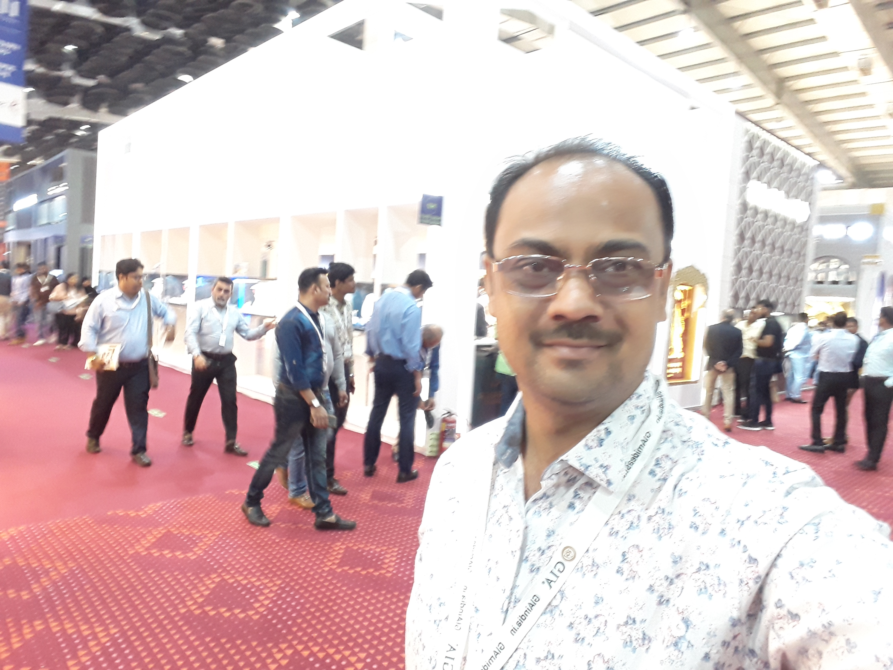
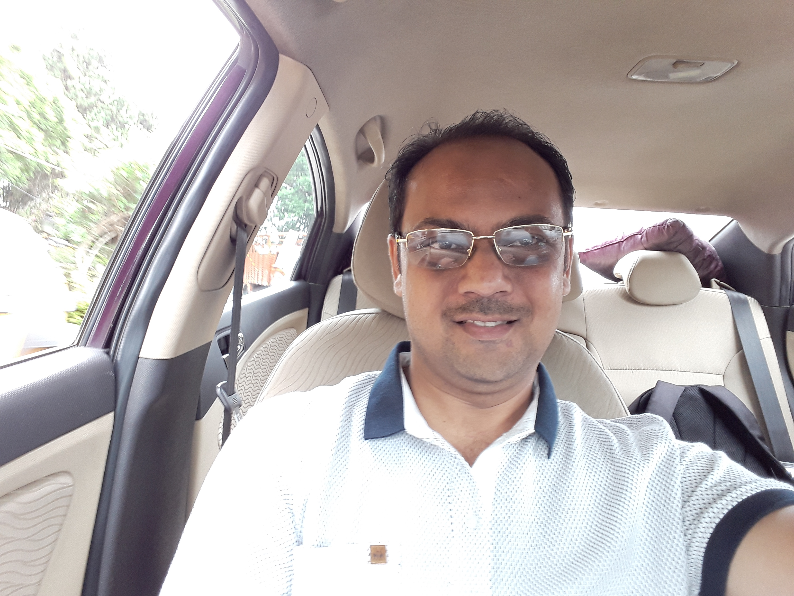
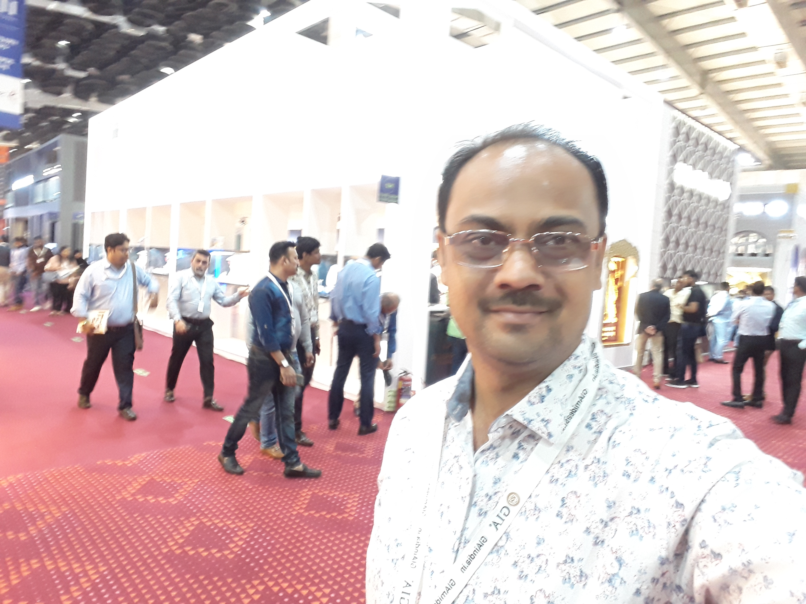
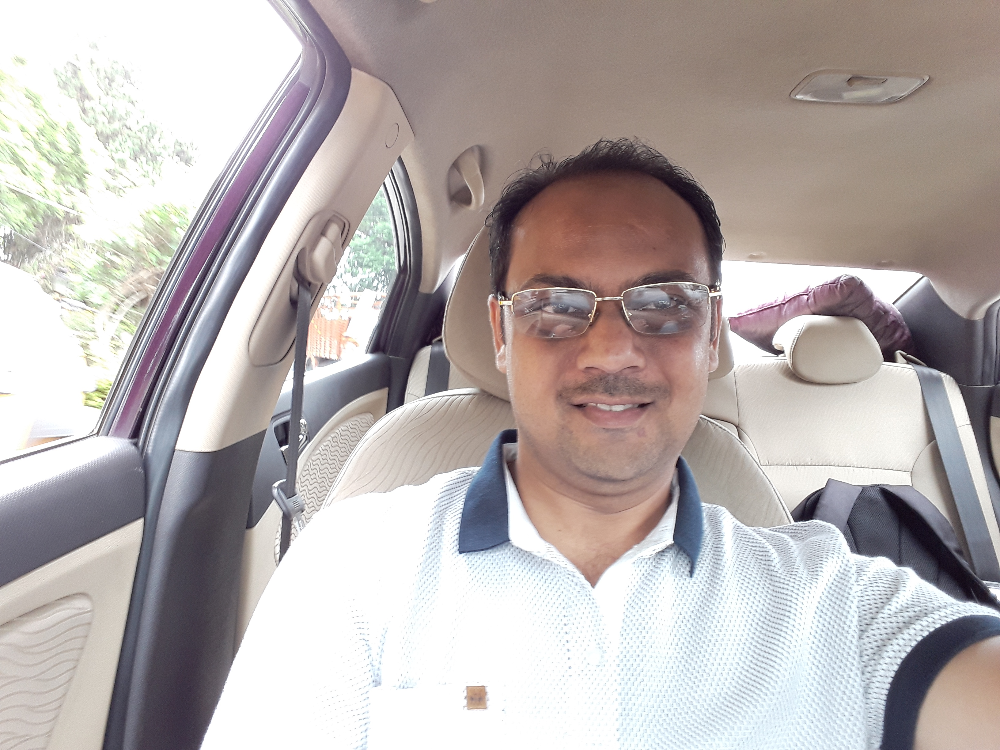

Father’s day is one occasion which comes
with an opportunity to make your Dad feel
special and make him realise his contribution
in the whole family set up. When a child is born,
right from the day, to him his father is his
superhero. The child learns to move and take
the first step with his Father. Children therefore,
look for ways to enchant their Fathers and shower
upon love with a heart full of Love.
Here we are going to educate the audience
on making powerfully done speeches on
father’s day and will be sharing a few of
them.
 


